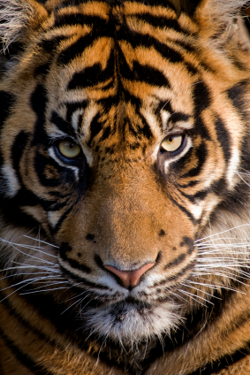
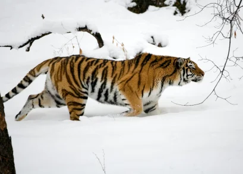

Siberian Tiger
The Siberian tiger, a subspecies of tiger, is the largest cat in the world. It averages about 3.3 m (11 ft.) in length, with a tail measuring 1 m (3 ft.). Adult male Siberian tigers can weigh up to 320 kg (700 lb.), while females are significantly smaller, weighing up to 180 kg (400 lb.).
Siberian tigers are distinguishable by their striped fur. Similar to people's unique fingerprints, no two tigers have the same striped pattern. Siberian tigers differ from other tigers because they have fewer, paler stripes, and they also have manes. The mane, in addition to their thick fur, helps keep them warm.
Also known as the Amur tiger, the Siberian tiger resides in a small region in the southeast region Russia. They are also located in small numbers in China and North Korea.
Siberian tigers are solitary animals, marking their scent on trees to keep other tigers away. They roam many miles and hunt often. They stalk their prey, which include elk, boar, bears, and deer, until they are close enough to pounce. When successful, they drag their kill to a secluded area before devouring the meat.Tigers also hunt smaller animals like rabbits, pikas, and fish.
Because tigers are not always successful on their hunts, they need to hunt often. They can eat up to 27 kg (60 lb.) if they are very hungry, but generally they eat about 9 kg (20 lb.) of meat in one sitting.
The gestation period in Siberian tigers is 3-3.5 months. Female tigers give birth once every two years at any point during the year.
A litter consists of two to six cubs. The mother tiger will care for the cubs by herself, at times, leaving the babies alone while she hunts. Often she cannot catch enough food for the cubs, and some will die.
At 3 months, the babies will be able to leave the den; they may even go on hunts with their mother. At 18 months old, they are able to hunt on their own, but will not leave their mother's den. When they reach 2-3 years old, they will leave the den and begin life on their own.
Conservation Status
Siberian tigers are considered endangered by IUCN's Red List. One cause of their dwindling population is loss of habitat due to deforestation. In addition, Siberian tigers are poached, or illegally hunted, for their fur and for body parts that are used for traditional medicines.
Efforts have been made to curb poaching of tigers and to protect tiger habitats. Many countries, including the United States, have created laws that outlaw the importation and selling of tiger parts. There are also breeding programs to help sustain the tiger population.
Siberian Tiger Distribution
The Siberian tiger resides in a small region in the southeast region Russia. They are also located in small numbers in China and North Korea.